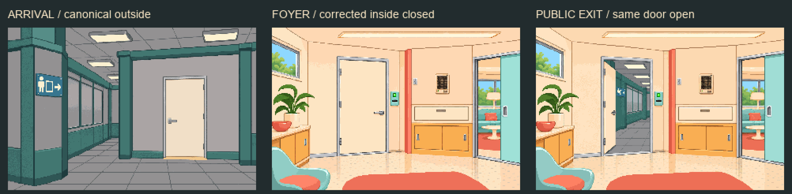
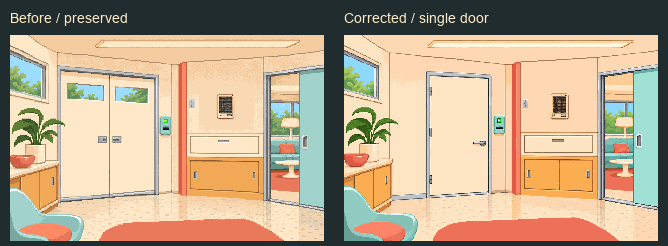
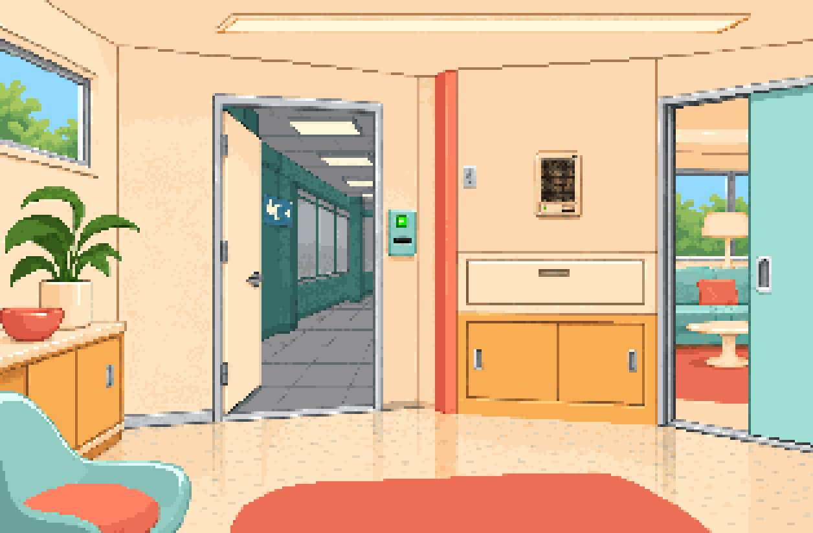
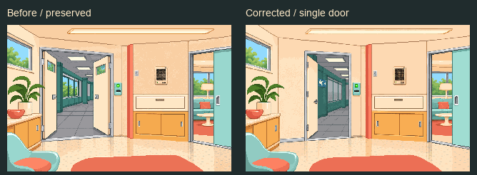

Exact4×1256×824

Canonical arrival unchanged; two corrected scenes only. One solid ivory leaf, no entrance glazing or exhibit title. Exterior hinges are on viewer-right; inside hinges are on viewer-left, with the lever on the free edge. The single leaf opens outward into the same institutional corridor.
Correction notes · Built-in imagegen prompts · Hashes / door convention · QA

Generated candidate ·314×206 RGB · approval pending


Generated candidate ·314×206 RGB · approval pending


The former left side of the wide double opening is now flush ivory wall/skirting. Right jamb and scanner stay in place; no vestibule or second doorway. Existing decorative plants remain scenery, not a donated resident. Both public-exit outcomes use this open-door image. No story, engine, production integration or separate service-exit change.
Private branch agent/ch01-art-batch04-20261115 · verified baseline f867fee7b0f104dae0978d98311b95d2759e8f92. Final remote-verified commit is reported in the owner handoff.